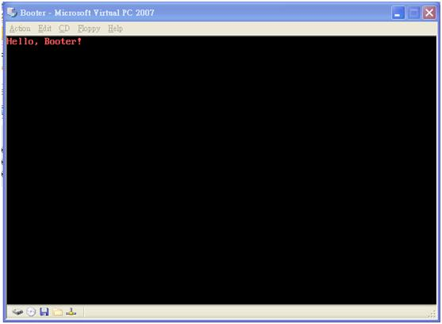

個人電腦 (x86) 的最小啟動程式
簡介
在本文中，我們將示範如何撰寫一個小型的 IBM PC (x86) 啟動程式。但或許稱這個程式為啟動程式有點太過頭了，其實我們只是要寫一個開機時可以印出 “Hello, Booter!” 訊息的程式罷了。
在PC一開機時，BIOS中就具有一個小型的啟動程式 (第一層啟動程式)，該啟動程式會根據CMOS的開機設定，嘗試載入光碟、軟碟或硬碟的啟動磁區，然後載入該磁區並執行其中的程式，這個啟動磁區中的程式就是PC的第二層啟動程式。
通常，這個啟動磁區的程式會進一步載入作業系統，像是 DOS、MS. Windows或 Linux。但是，在本節中，我們並不嘗試載入作業系統，只是單純的於啟動後，在螢幕上印出 “Hello, Booter !” 的訊息而已。
啟動程式的組合語言
現在，就讓我們來撰寫一個簡單的PC啟動程式，如範例 1 所示，該程式的來源為楊文博的《使用開源軟體-自己動手寫作業系統》 一書的第二章，該書有免費的電子版，您可於網路上直接下載。
範例 1. 個人電腦 PC 的小型啟動程式 (檔案名稱： boot.s)
.code16 #使用16位元模式彙編
.text #程式碼片段開始
mov %cs,%ax
mov %ax,%ds
mov %ax,%es
call DispStr #調用顯示字串常式
jmp . #無限迴圈
DispStr:
mov $msg, %ax
mov %ax,%bp #ES:BP = 串地址
mov $16,%cx #CX = 串長度
mov $0x1301,%ax #AH = 13, AL = 01h
mov $0x00c,%bx #頁號為0(BH = 0) 黑底紅字(BL = 0Ch,高亮)
mov $0,%dl
int $0x10 #10h 號中斷
ret
msg:.ascii "Hello, Booter !"
.org 510 #填充到~510~位元組處
.word 0xaa55 #結束標誌
啟動程式的連結檔
要讓這個啟動程式執行，必須使用連結檔，將程式連結到 PC的啟動位址 0x7C00上，然後定義啟動位址的符號 (在 Cygwin 中的啟動符號為 c，但在Linux 中的啟動符號為 _ftext)，範例 2 顯示了該啟動程式的連結檔 boot.ld，由於筆者是在 Cygwin底下操作的，因此，啟動符號設定為 c。
範例 2 啟動程式的連結檔(Link Script) (檔案名稱： boot.ld)
SECTIONS
{
.text 0x7c00 :
{
c = .; /* Program will be loaded to 0x7c00. */
} = 0
}
啟動程式的專案檔
接著，我們必須撰寫專案檔，以便進行編譯、連結等工作，範例 6.27顯示了該啟動程式的專案檔 (Makefile)，讀者可以利用 make 指令，重建該啟動程式專案。
範例 3 啟動程式的專案檔 (Makefile) (檔案名稱： Makefile)
CC=gcc
LD=ld
# 使用連接腳本 boot.ld
LDFILE=boot.ld
OBJCOPY=objcopy
all: boot.img
# Step 1: 使用 gcc 將 boot.S 編譯成目的檔 boot.o
boot.o: boot.S
$(CC) -c boot.S
# Step 2: 使用ld 連接腳本 boot.ld 將 boot.o 連接成可執行檔 boot.elf
boot.elf: boot.o
$(LD) boot.o -o boot.elf -e c -T$(LDFILE)
# Step 3: 使用 objcopy 移除 boot.elf 中沒有用的 段(.comment,.note,...),
# 並且去掉所有符號資訊，輸出為二進位檔案 boot.bin 。
boot.bin : boot.elf
@$(OBJCOPY) -R .pdr -R .comment -R.note -S -O binary boot.elf boot.bin
# Step 4: 生成可啟動軟碟鏡像。
boot.img: boot.bin
@dd if=boot.bin of=boot.img bs=512 count=1
# 呼叫 boot.bin 生成鏡像檔第一個磁區，
# 並在 bin 生成的鏡像檔後補上空白，最後成為合適大小的軟碟鏡像
@dd if=/dev/zero of=boot.img skip=1 seek=1 bs=512 count=2879
clean:
@rm -rf boot.o boot.elf boot.bin boot.img
您可以使用 make 指令建置該專案，範例 6.28是我們在 Cygwin 環境中建置該啟動程式的過程，建置完成後，會有一個大小為 1.44MB 的檔案 boot.img產生。
使用 VirtualPC 執行該啟動程式
範例 4. IBM PC 啟動程式的建置過程 (在 Cygwin 中建置 IBM PC 的啟動程式)
ccc@ccc-kmit2 ~/boot
$ make clean
ccc@ccc-kmit2 ~/boot
$ ls
Makefileboot.ldboot.s
ccc@ccc-kmit2 ~/boot
$ make
gcc -c boot.S
ld boot.o -o boot.elf -e c -Tboot.ld
1+0 records in
1+0 records out
512 bytes (512 B) copied, 0 s, Infinity B/s
# 在 bin 生成的鏡像檔後補上空白，最後成為合適大小的軟碟鏡像
2879+0 records in
2879+0 records out
1474048 bytes (1.5 MB) copied, 0.085 s, 17.3 MB/s
ccc@ccc-kmit2 ~/boot
$ ls -all
total 1455
drwxrwxrwx+ 2 ccc None 0 May 28 14:42 .
drwxrwxrwx+ 11 ccc None 0 May 28 12:02 ..
-rwxrwxrwx 1 ccc None 866 Apr 28 13:07 Makefile
-rwxr-xr-x 1 ccc None 512 May 28 14:42 boot.bin
-rwxr-xr-x 1 ccc None 1890 May 28 14:42 boot.elf
-rw-r--r-- 1 ccc None 1474560 May 28 14:42 boot.img
-rwxrwxrwx 1 ccc None 96 May 28 11:19 boot.ld
-rw-r--r-- 1 ccc None 858 May 28 14:42 boot.o
-rwxrwxrwx 1 ccc None 453 May 28 11:21 boot.s
您也可以將此映像檔轉錄到1.44MB的軟碟片當中，然後重新啟動電腦 (請注意必須於開機後設定成以軟碟機啟動的開機順序)，就會看到電腦上出現紅色的 Hello, Booter ! 字樣。
但是，現在許多PC都已經沒有軟碟機了，因此，較為通用的方法是使用像是 VMWare、VirtualPC、VirtualBox 等虛擬機器，然後，用這個檔案就可以作為軟碟映像檔，將其作為虛擬的軟碟機使用。
當您在 Virtual PC 中建立了一個新的虛擬機器之後，就可以啟動該虛擬機器，然後按下『Floppy/Capture Floppy Disk Image…』的功能，接著選取方才所產生的 boot.img 檔作為虛擬軟碟片 (如圖 2 所示)，然後，按下『開始』按鈕，您就會看到如圖 3 所示的執行結果，在螢幕上出現 “Hello, Booter !” 的紅色字樣。這便是範例 1 的執行結果。
![[圖 2. 在 Virtual PC 中設定 boot.img 為虛擬軟碟機的畫面]](VirtualPCBootDisk.jpg)

參考文獻
- 《使用開源軟體-自己動手寫作業系統》可於 http://share.solrex.cn/WriteOS/download.php 網頁下載 (楊文博著)，該書乃是參考《自己動手寫作業系統》（於淵著）所寫的開放原始碼書籍。